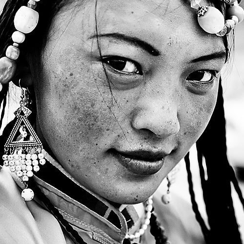
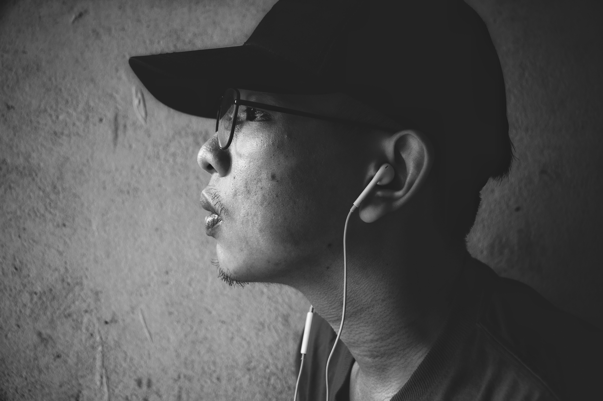

My name is Jamir and I am a Hindu ascetic. I was born in a small village in the state of Uttar Pradesh, India.
From a young age, I felt a strong spiritual calling and was drawn to the teachings of Hinduism.
As a child, I would often spend hours meditating and contemplating the mysteries of the universe.
My parents were supportive of my spiritual pursuits, and they encouraged me to explore my beliefs in my own way.
As an ascetic, I spend my days in deep meditation and contemplation. I often wander the countryside, seeking out places of natural beauty where I can connect with the divine.
I have written many poems and songs that reflect my spiritual journey, and I often sing these as I travel.
My life may seem austere to some, but I have found great joy and fulfillment in my spiritual practices.
Through my devotion to the divine, I have found a sense of purpose and meaning that transcends the material world.
I continue to wander, seeking out new insights and experiences, and I am grateful for every moment of my journey
My name is Sujata and I am a Buddhist woman from Nepal. My journey with Buddhism began when I was a young girl growing up in Kathmandu.
My family was not particularly religious, but I was always drawn to the teachings of the Buddha.

As I got older, I became more serious about my spiritual practice. I began meditating daily and studying the Buddhist scriptures.
I also started attending retreats and spending time in monasteries, where I could deepen my understanding of the Dharma.
I was born and raised in Hong Kong, China. Growing up in the city, I was exposed to the vibrant blend of cultures that make Hong Kong so unique. My parents instilled in me a deep sense of tradition and respect for my Chinese heritage, which has influenced every aspect of my life.
I started to write short stories and poetry in my spare time, often drawing inspiration from my experiences growing up in Hong Kong. Some of my favorite topics to explore in my writing are the clash of cultures, the changing face of modern society, and the struggle to balance tradition with progress.
Today, I spent most of the day tending to my garden, and it brought back memories of my childhood in rural China. I remember the hours I spent with my grandmother, learning about the various herbs and vegetables that she grew, and how to tend to them with care.
As I grow older, I find myself relying more and more on the traditions and practices that my grandmother taught me. Whether it's brewing a pot of herbal tea to soothe my nerves, or preparing a traditional dish to share with my family,
I am always grateful for the knowledge that has been passed down to me.